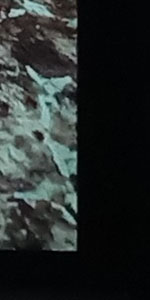
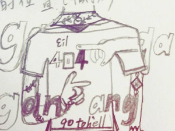
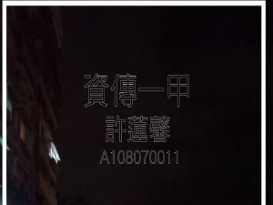
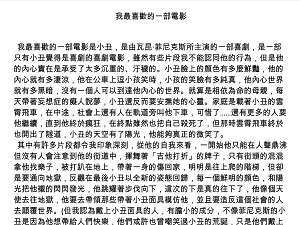
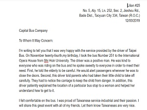

許蓮馨
Lian-Xin Xu
桃園市八德區介壽路2段252巷15弄4衖5號·
No.5, Sub-alley 4, Aly. 15, Ln. 252, Sec. 2, Jieshou Rd., Bade Dist., Taoyuan City 33445, Taiwan (R.O.C.)
我的興趣是聆聽音樂，探索不一樣的音樂風格，並且了解不同演唱者的背景。
我也喜歡閱讀，從閱讀不同的書籍，去體驗不同時代、不同背景的人物生活的風格。
最近正在訓練自己的毅力，所以沒有早八的時候，也會跟著室友早起！
一直喜歡看韓國節目《SHOW ME THE MONEY》
最近喜歡的一位饒舌歌手是Changmo,是一位看久了很帥的人
經歷Experience
世新大學-資傳一甲
學習資訊整合及網頁設計
目前沒甚麼作品...
Sep 2019 - March 2020
學歷Education
Sep 2019 - March 2020
世新大學 資訊傳播學系
Sep 2016 - June 2019
壽山高中
專長Skills
我現在有的技能：
成為一個行銷企劃所需的能力：
- 語言能力 EX: 英文、韓文、日文
- 探索世界，培養發現美的眼睛
- 彙整資訊以及多方參閱資料
- 與團隊合作的溝通能力
興趣 Interests
我的興趣是聆聽音樂，探索不一樣的音樂風格，並且了解不同演唱者的背景。
我也喜歡閱讀，從閱讀不同的書籍，去體驗不同時代、不同背景的人物生活的風格。
最近新培養的一個興趣的一個興趣是手沖咖啡以及拉花，因為在開學的時候跟室友一起加入了咖啡社，所以開啟了對咖啡的新視野，讓我覺得咖啡很有趣，因為對於咖啡的感覺是非常主觀的，所以我想嘗試著沖出大家都不會太討厭的咖啡。
說到培養新的視野，用不同的角度看事情，旅行也是我很喜歡的一個方式。
獎項 Awards
- 好寶寶
- 堅持將近2個禮拜棒式-堅持獎
- 1st 壽山高中班際排球(我沒上場)
- 1st 壽山高中一年級大隊接力第一名(我第一棒)
我的最愛 Favorite
平常我最愛做的事情就是聽音樂了！音樂是一個無國界的、讓人放鬆的且能夠從中了解創作者的事物，非常的神奇。接下來就來看看我近期最喜歡的歌以及創作者吧！
以下為韓國排行：
| 歌曲 | 歌手 | 專輯名 | 專輯發行 | 曲風 |
|---|---|---|---|---|
| 禹元宰 | af | 2018 | 饒舌 | |
| DPR LIVE ft.GRAY | Action! | 2018 | 嘻哈 | |
| PH-1 ft. 禹元宰 | Show Me the Money 777 | 2018 | 饒舌 | |
| Kid Milli ft. GRAY | Show Me the Money 777 | 2018 | 饒舌 | |
| Changmo | INCOMPLETE | 2015 | 饒舌 |
作品集 Gallery
以下是從高中到現在所做的作品，其中包括動態與靜態的作品。
Check It Out！


Flowers
用每一天去紀錄生命的美妙

！將稍縱即逝的靈感鳥兒記錄下
塗塗寫寫
！將稍縱即逝的靈感鳥兒記錄下

願某日能將我腦袋的想法都變成具體。
歷史敘事Indesign_雜誌
願某日能將我腦袋的想法都變成具體。

There is no punchline. It’s not a joke.
最喜歡的電影_小丑
There is no punchline. It’s not a joke.

寫一封信給默默在社會上為我們的生活變得更好的人。